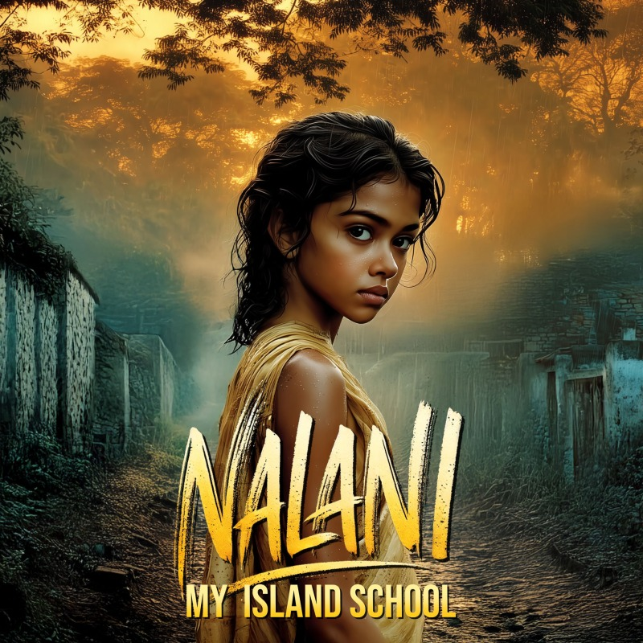

WORLDMATAALA
VOICENALANI
MOVEMENTThe Storm Unseen
My Island School
The Storm Unseen · A cinematic music video and short film from a 19th-century Polynesian historical fiction
The Scene
A powerful arc from a small island schoolroom to a mind no rule can hold. Dust, rain, and chalk on the wind. The sisters teach stillness; Nalani learns their language and their laws instead, reading lies in every face, and rows too far to ever be kept.
Lyrics
My little island school all dust and rain
Chalk on the wind salt on the pane
The sisters smiled with measured grace
Their prayers weighed more than their embrace
They taught that stillness keeps you whole
That quiet feeds the proper soul
But I rowed too far I questioned proud
And I learned quick how not to bow down
A million waves I caught the flame
Burned on the edge of someone's game
I learned to speak I learned their ways
Not to kneel not to obey
Not spear and blade but gaze and grace
I read their lies in every face
And when one begged me not to go
I left to fight the world I know
On mainland steps their shadows trailed
Too brown too sharp to see me fail
But I could row through shame and spite
A hundred miles no end in sight
A scholar came from overseas
And spoke the island's fate to me
I gave no tell I gave no plea
"Where fire grows none leaves it free"
A million waves I held my breath
Learned how to slip their nets of debt
I learned their speech I learned their rules
But not to kneel not to be schooled
Not spear and blade but stare and pause
I found the cracks beneath their laws
And that one begged me not to go
I left to fight the world I know
My father said
Take what they fear
And use your voice
But power breaks as much as builds
And trust is lost where fire kills
They made me sharp
They made me still
Now I will do what no one will
A million waves I cut the chain
Not just a girl not just a name
They gave me books I gave them proof
A blade beneath a student's youth
Now every storm and every cry
That little school still answers my eyes